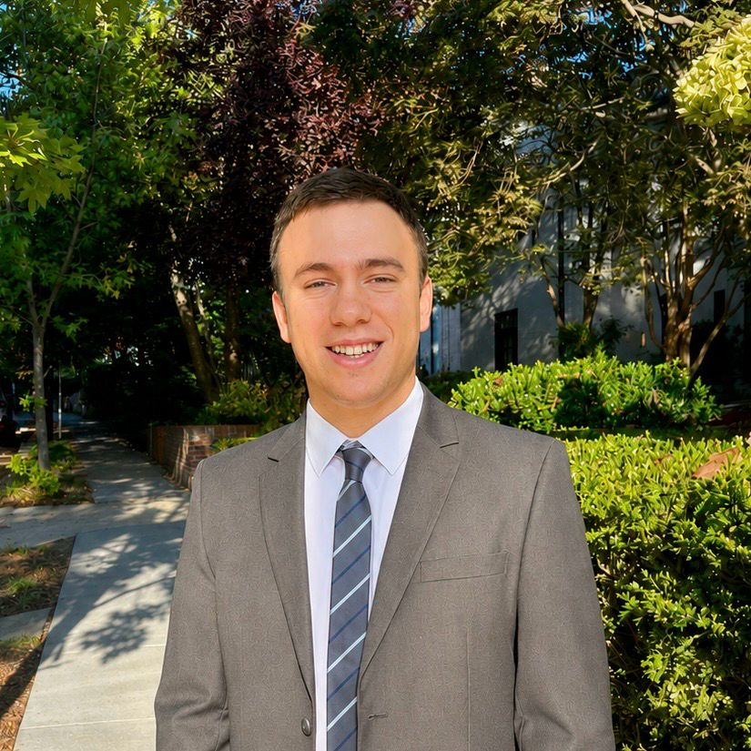

I am an argentinian economist currently working as a Pre-Doctoral Research Analyst at the World Bank, based in Washington DC. Previously, I worked as a Research and Teaching Assistant at Universidad de San Andrés (Argentina) and Universidad Nacional de La Plata (Argentina). My research interests lie mainly in Macroeconomics, Public Economics, and International Economics.
I hold a M.A. in Economics from Universidad de San Andrés (Argentina) and a B.A. in Economics from Universidad Nacional de La Plata (Argentina).
[Work in Progress]
[Work in Progress]
Thesis: Global Dollar Shocks and Spillovers into EMDEs: The Channels of Commodity Prices and Country Risk
Advisor: Javier García-Cicco
Grade: Distinguished
Magna Cum Laude.
Distinction "Joaquín V. González" awarded by the Municipality of La Plata for achieving the $2^{nd}$ highest graduation GPA of the School of Economic Sciences of the Universidad Nacional de La Plata in the 2023-2024 academic year.
Analysis of economic indicators, and technical contributions to regional studies and research papers.
Summary statistics and econometric analysis for the paper "Permanent and Transitory Monetary Shocks around the World" by J. García-Cicco and F. Sturzenegger.
Data collection, database building, and analysis of energy prices in Argentina.
The initiative aims to bring together students and researchers from institutions worldwide and introduce them to frontier topics and techniques in international economics.
Instructors: Cecile Gaubert (UC Berkeley), Christoph Trebesch (Kiel University), David Hémous (University of Zurich), Federica Romei (University of Oxford), Christopher Clayton (Yale University), and Natalia Ramondo (Boston University).
My master’s thesis was selected as one of the 10 best papers (out of 123) presented at the LX Annual Meeting.
Professor: José María Fanelli